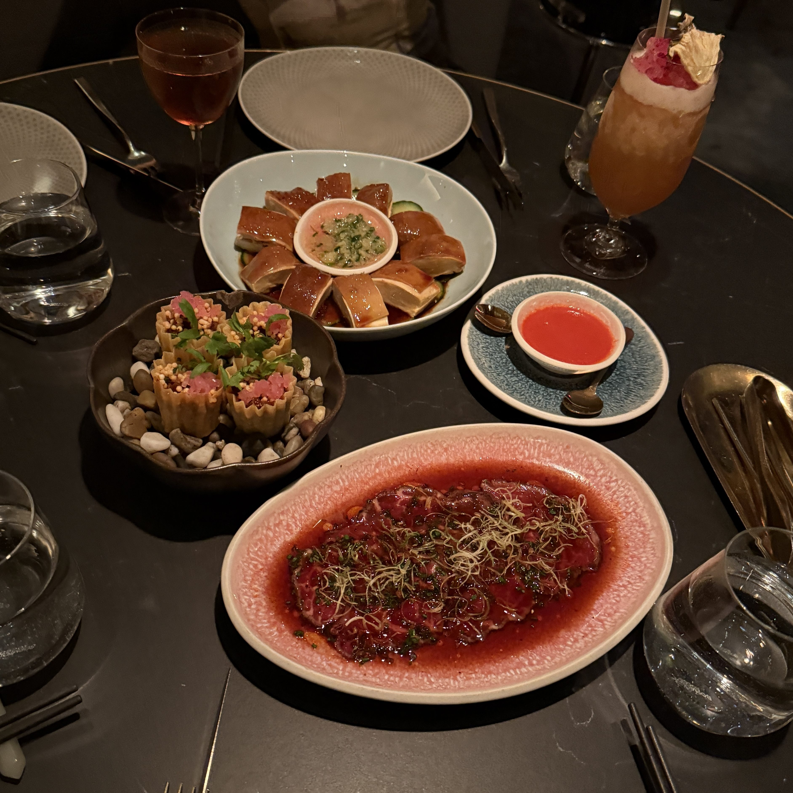

53
MENU:
REVIEW:
All the dishes were amazing, each with a contemporary Chinese fusion twist that made them unique. My favorite was the black cod clay pot, which was comforting and packed with subtle, well-balanced flavors. The lobster rice was another standout; the lobster was tender and slightly chewy, blending beautifully with the soft, fragrant rice. The duck pie tee was incredibly flavorful, and the cilantro garnish added freshness that balanced the richness of the duck.
⭐ rate: 9.9/10